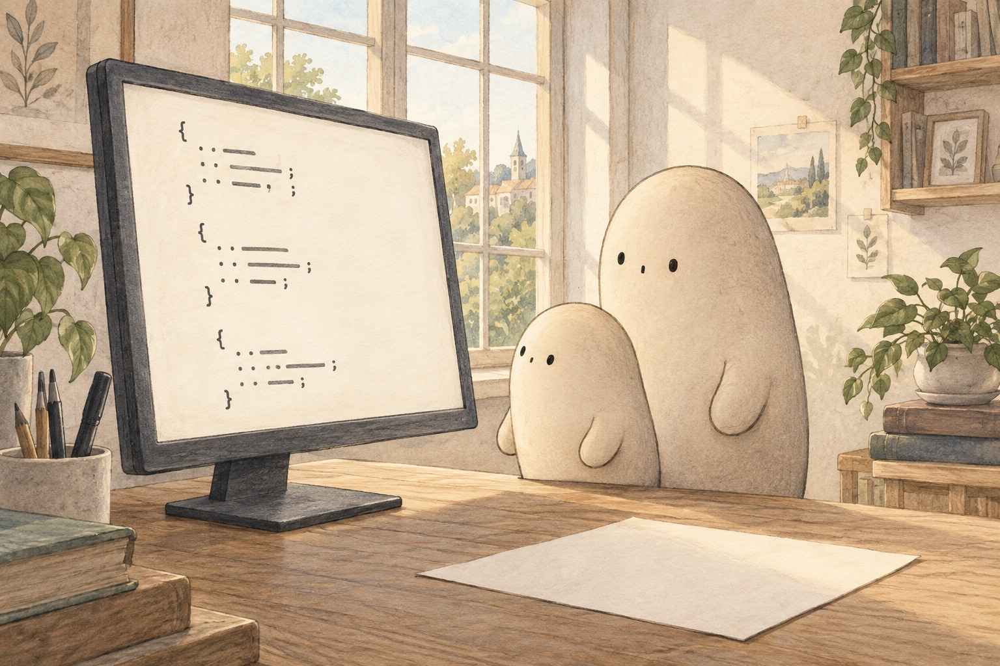
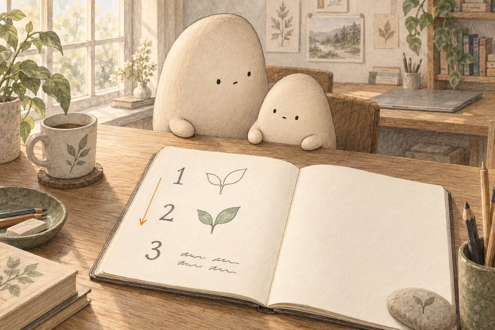
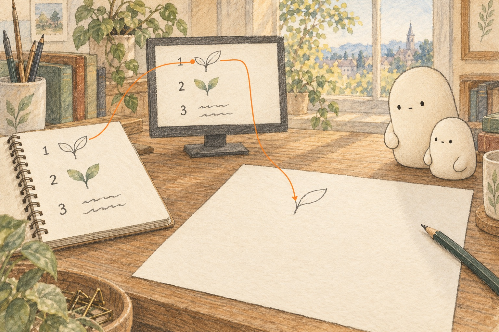
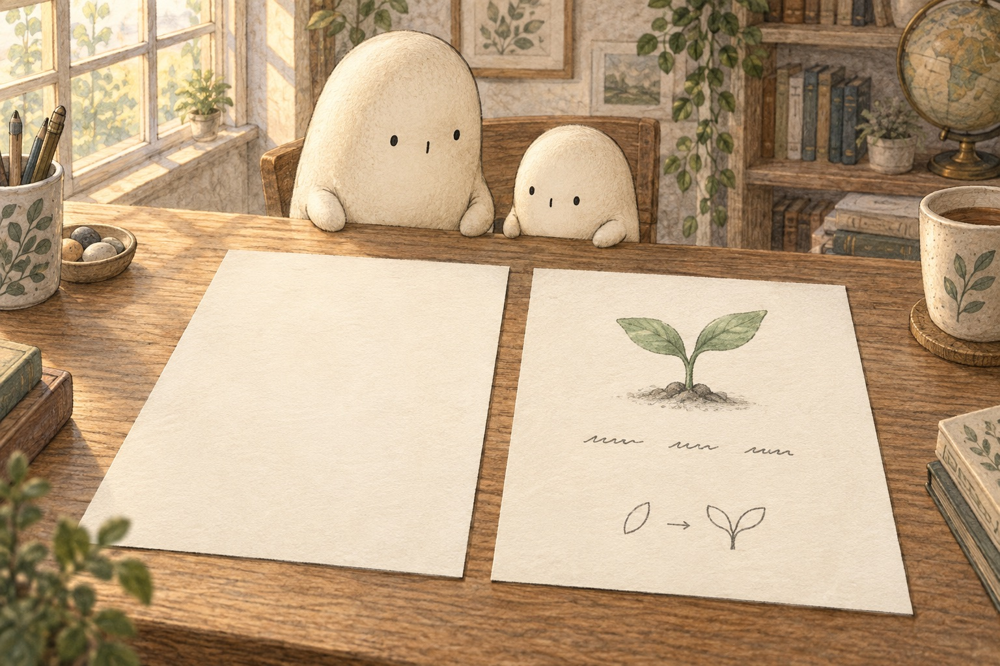
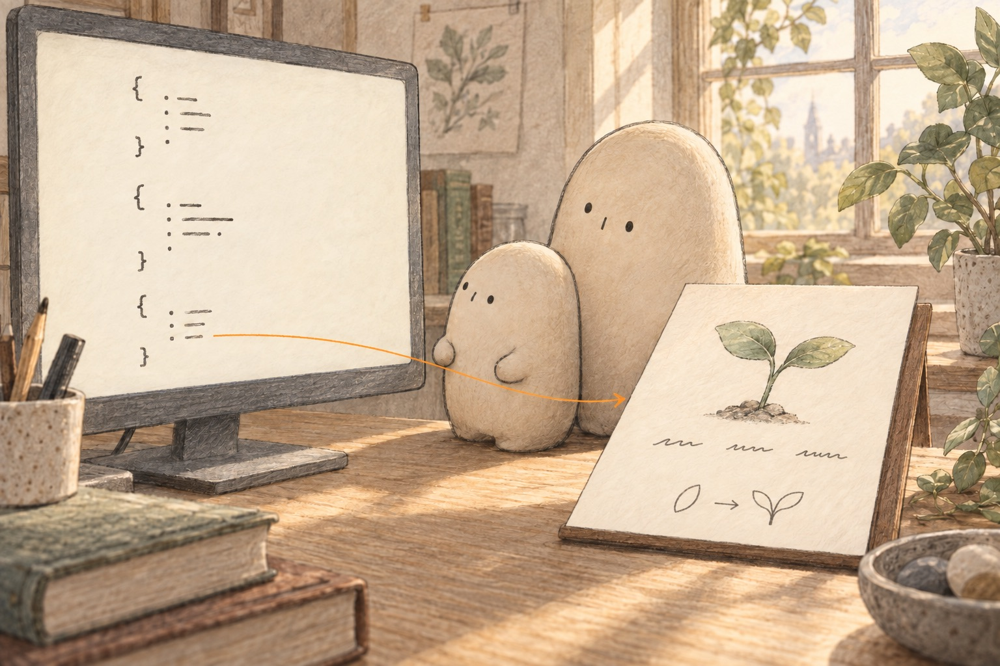
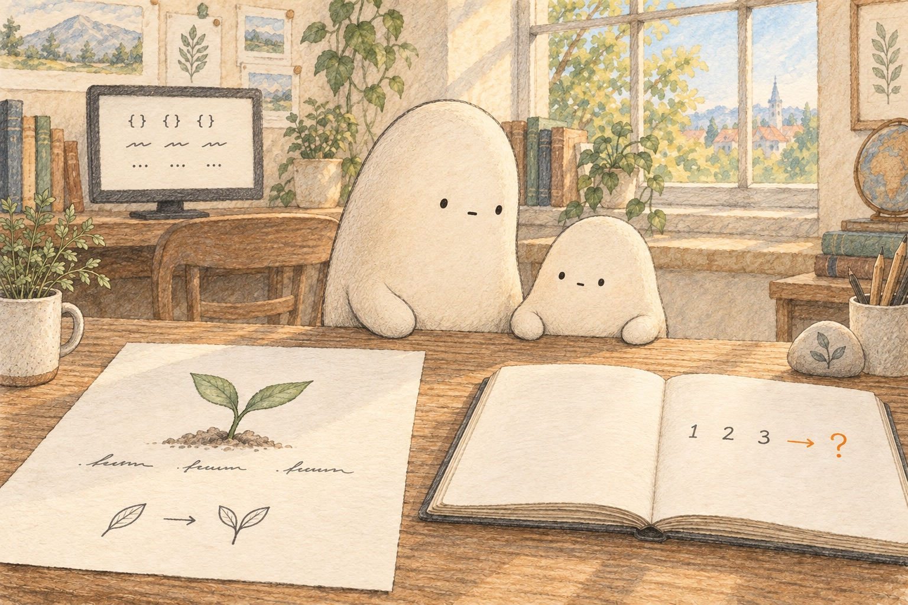

A story of ordered jobs
From marks to a morning. · Curiosity day

Little Wonderer leans toward a soft screen. The marks are neat, not scribbles. “Are they a secret?” Big Wonderer waits. One mark alone does almost nothing. A list of marks can be instructions — tiny jobs written so a machine can follow them.

On the notebook, three jobs sit in a line: first, next, then last. That careful order is a sequence. If the last job ran first, the page would look wrong. Little copies the order with a finger. The plan lives in the sequence, not in any single mark.

A quiet helper follows job one, then job two, then job three. A line lands. A wash of color follows. A word settles into place. The blank page transforms — it changes because each instruction ran in turn. Little watches the path from list to paper.

Left: a blank page. Right: a picture and a short sentence. That difference is evidence the jobs worked. Little builds an inference: the ordered instructions made the finished page. One detail could be luck. Two matching changes are harder to ignore.

Little returns to the first screen of marks. Beside it rests a finished morning sheet — a lesson ready to use. The earlier guess (“secret scribbles”) no longer fits. The marks were a plan to transform instructions into something you can learn.

The lesson is here: words, a picture, a puzzle to try. Code became a daily morning. Little keeps one precise question: What else could a careful sequence of jobs become? Another picture? A song of clicks? The next list is waiting.
Think about it: Which two details are the strongest evidence that the instructions changed the blank page? Explain why. How did comparing the first marks with the finished lesson change Little's inference?